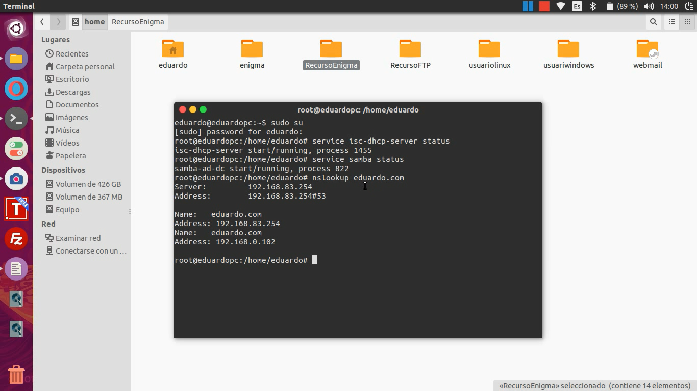
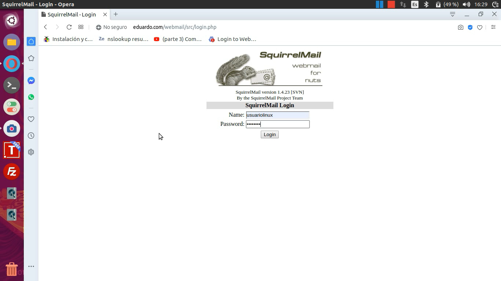
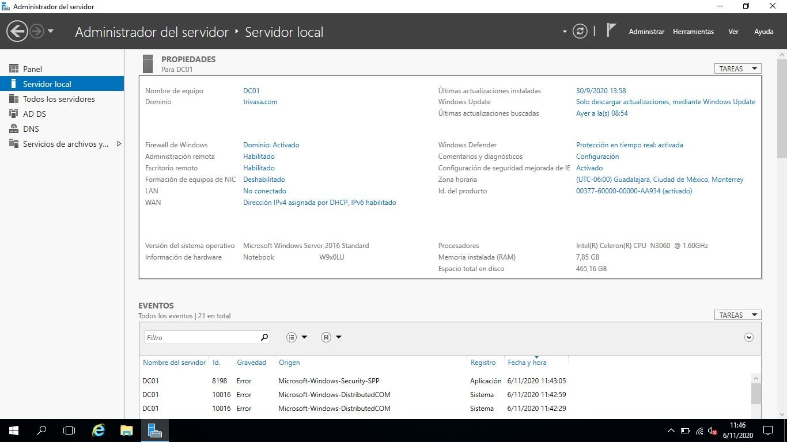
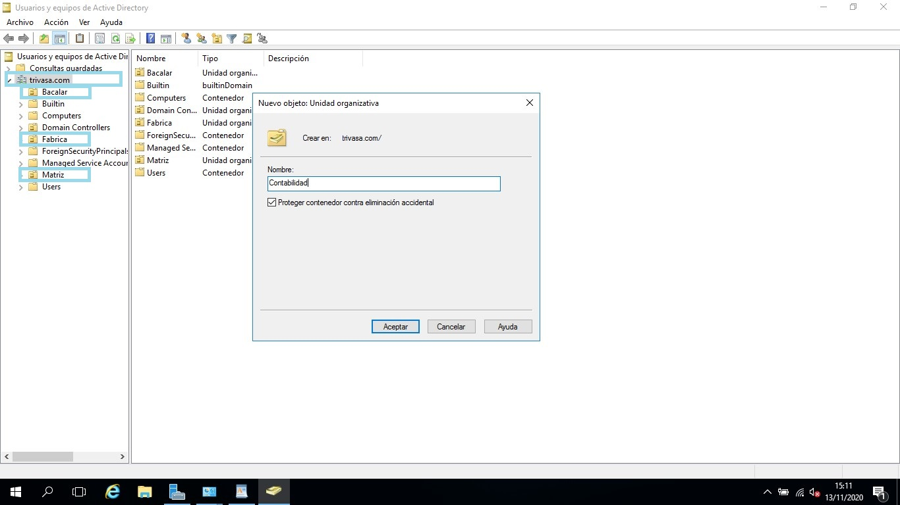
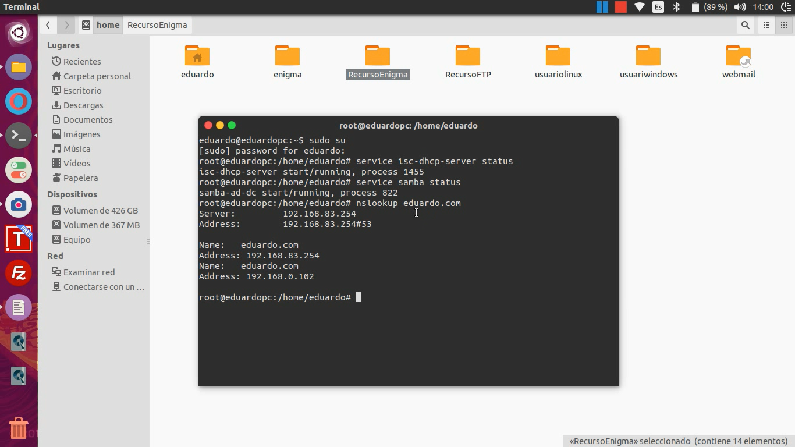
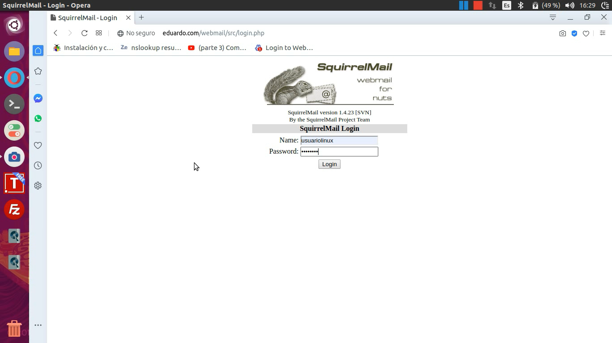
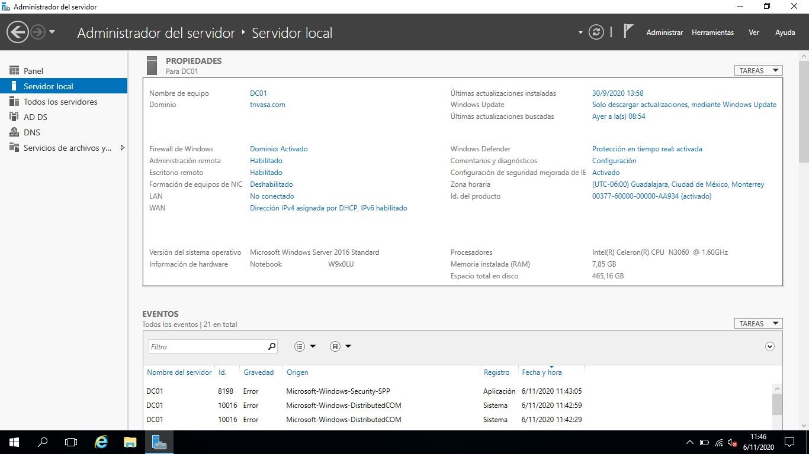
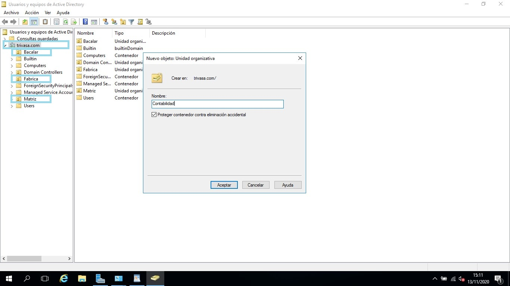

Juego ItzaGame

1Desarrollado en Unity
Juego desarrollado en la plataforma de UNITY, siendo una de las plataformas más populares para la misma.
2Blender
Una de los programas usados para su realización fue Blender, siendo uno de los programas más populares de modelado 3D.
3Enfoque cultural
El juego fué desarrollado mediante un enfoque cultural, con la intención de representar a escala una de las 7 maravillas del mundo.
Galeria
TALLER
1Uso de computadoras
Las computadoras ocupan un papel importante en la era digital, por ello su uso correcto es de vital importancia, así como conocer las buenas prácticas de uso.
2Mantenimiento preventivo y correctivo de computadoras
El mantenimiento correcto de los equipos de trabajo son de vital importancia para un flujo de trabajo constante.
3CCA
El taller fué impartido a los encargados de los CCA de los pueblos cercanos a la ciudad de Valladolid.
Galeria
SERVIDORES

1Windows Server
Los servidores ocupan una parte muy importante en una empresa, Windows Server permite tener un control de usuarios y de tecnologías necesarias para cubrir las necesidades de grandes y pequeñas empresas.
2Linux Server
Linux es considerada una de las plataformas más estables para desarrollar infraestructuras de red.
3Infraestructura
Los servidores permiten montar infraestructuras de distintas tecnologías, como lo puede ser el servicio de FTP o dominios.
Galeria
 







PÁGINAS WEB

1Centro Comunitario
Página web desarrollada para el Centro Comunitario de Valladolid en base a sus necesidades.
2Clinica San Juan
Páginas Web desarrolladas en base a clínicas como por ejemplo el de San Juan, integrando bases de datos.
3Otras Páginas Web
Varias Páginas Web con diferentes funcionalidades y finalidades.
Galeria

Valores:

Comprometido con el trabajo